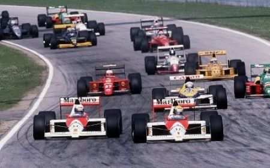
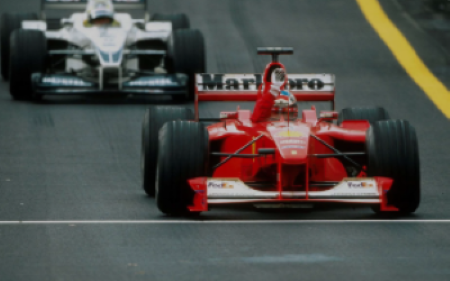
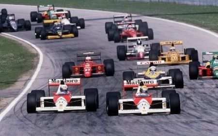
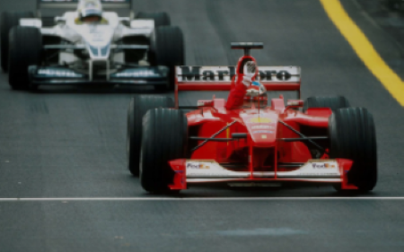
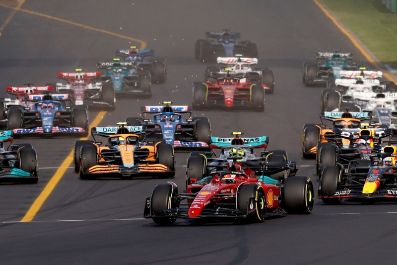
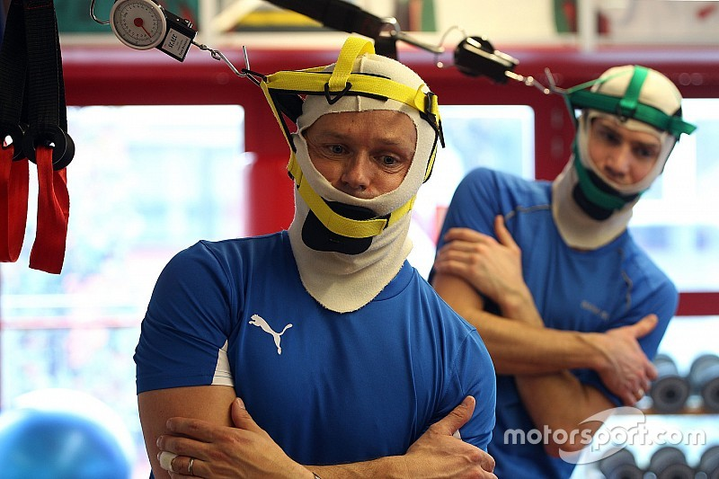
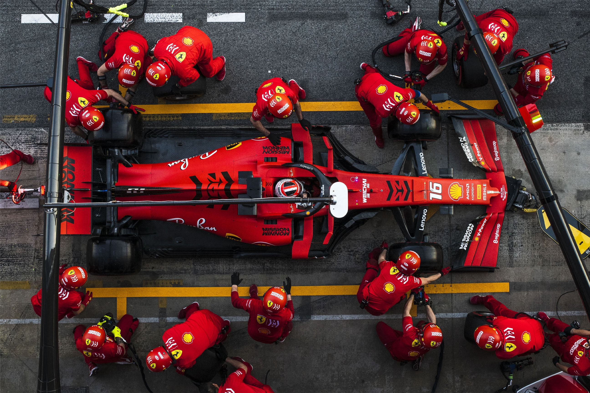

Le prime gare automobilistiche si disputano alla fine dell'Ottocento, ma sono più simili al rally. Negli anni venti nasce la Formula Grand Prix, un primo campionato che si svolgeva principalmente in Europa. La vera e propria Formula 1 nasce nel 1946. Il suon nome è dovuto all'insieme di regole che vengono tuttora aggiornate per macchine e piloti ("formula") e al fatto che il livello più alto di motoristica internazionale ("1"); Qualche anno dopo viene introdotto il campionato del Mondo Piloti e poi quello costruttori. Negli anni vennero introdotte diverse innovazioni nelle vetture come il motore turbo o l'elettronica. Le nuove tecnologie resero le macchine sempre più veloci e performanti ma aumentarono molto il costo per poter competere e molte scuderie fallirono.
 



Oggi l'evoluzione della F1 è sempre più veloce. Il record di velocità di una macchina di 378 km/h è stato raggiunto da Valtteri Bottas nel 2016. Ma non solo in pista le prestazioni sono aumentate vertiginosamente. I pit stop, cioè il cambio delle gomme da parte dei meccanici durante una gara, si fanno in meno di due secondi. Questo proprio perchè l'allenamento per arrivare alla perfezione da parte di tutti e davvero molto.
  